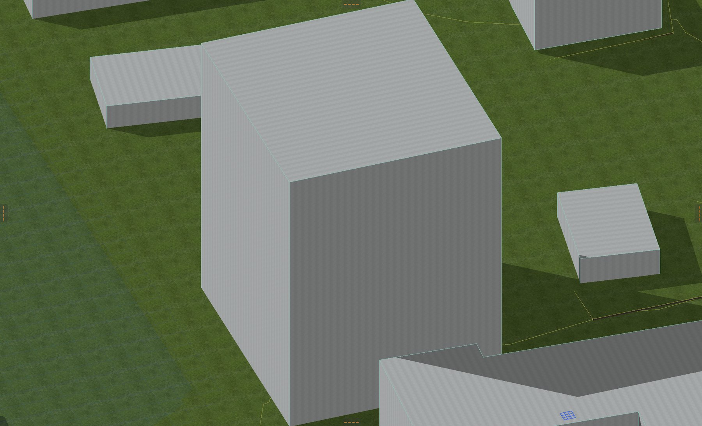
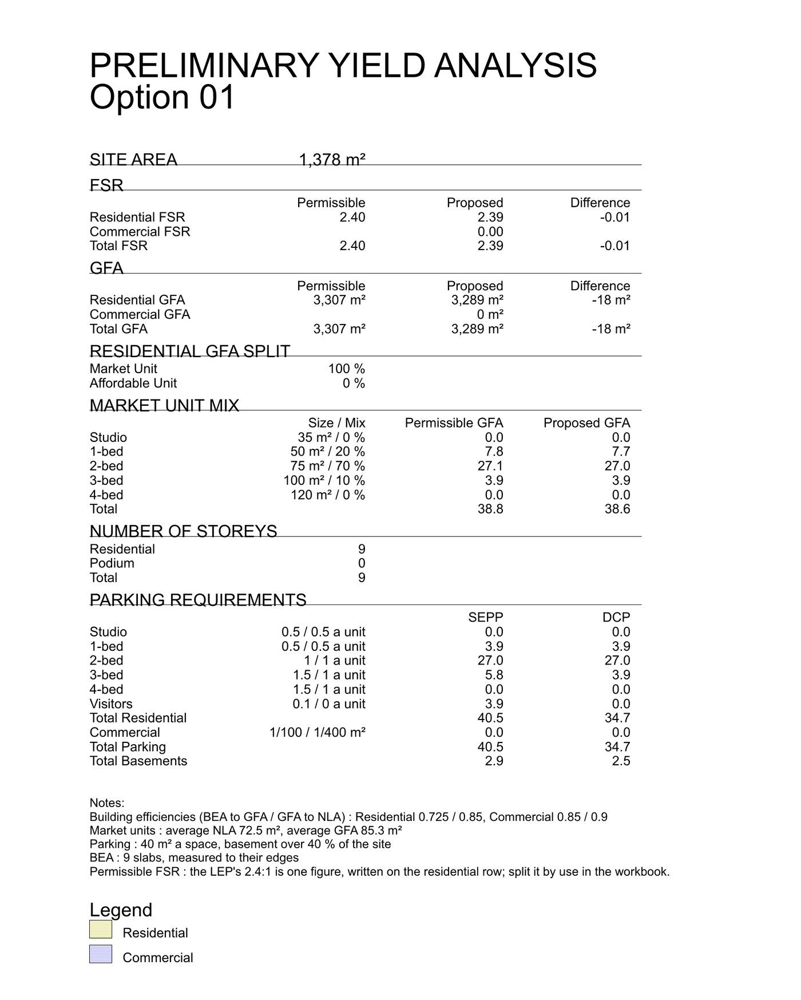
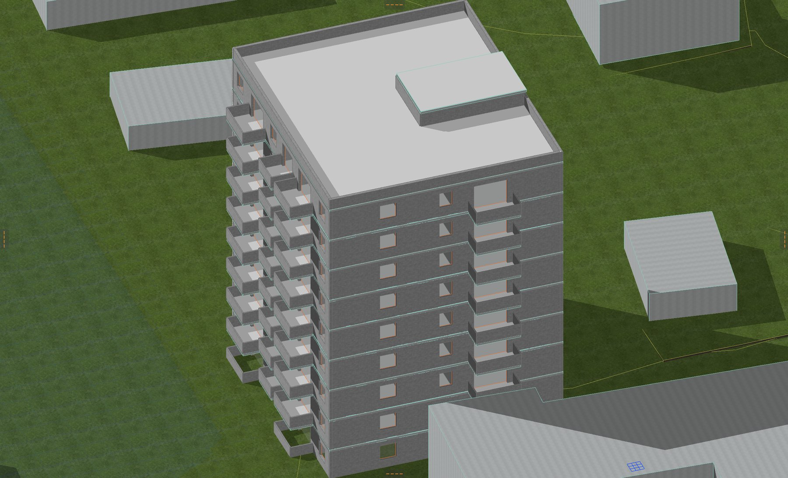
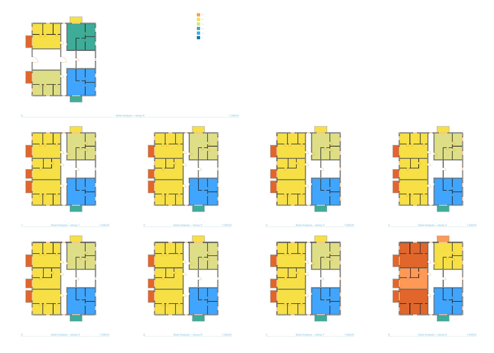
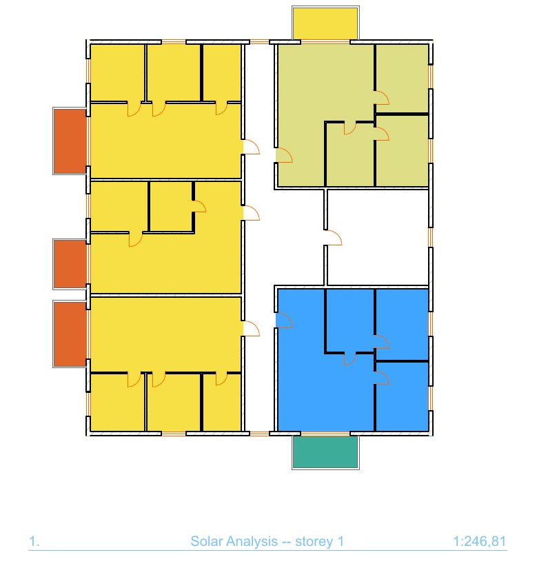
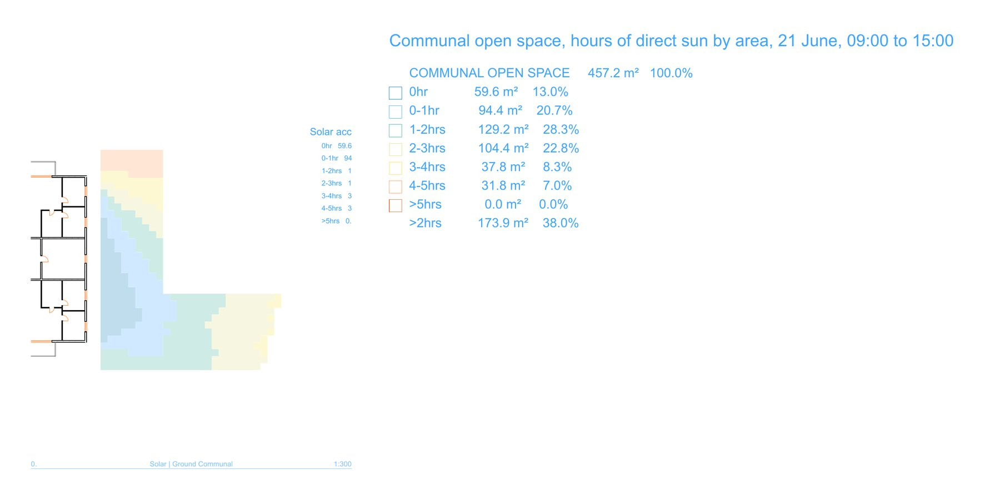
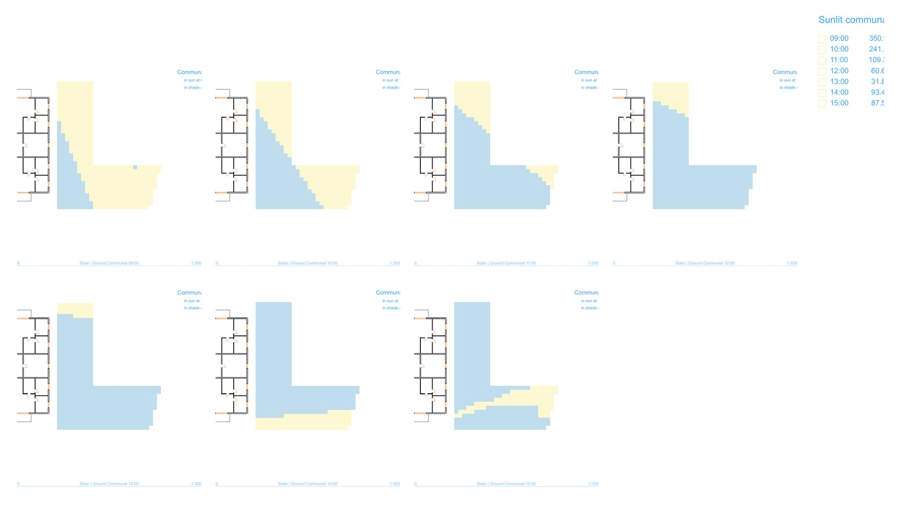

From an address to the apartments' sun hours, in one project.
A sample project, start to finish: a corner site at 26–30 Campsie Street, Campsie, in a new Archicad file from the standard Australian template. Four steps, each a page of the Loriini window and a Run button, or one command. Every drawing below is from that project, as Loriini left it in the Layout Book.
The site, from its address
Open the Site analysis page, type the address, switch on the panels wanted and press Run. Loriini finds the lots, reads the planning controls at them, and draws the sheets a DA starts with into the project, as native fills, lines and texts at true scale.
- Context Analysis at 1:3000: zoning, schools, shops and parks by name, the station and bus stops, five and ten minute walks.
- Site Analysis at 1:300: the boundary with its dimensions and levels, contours, neighbours, the sun path and the winds.
- Summary of Controls: zone, height, FSR and the GFA it allows, and the Apartment Design Guide's figures worked for this site's area.
- 3D context: the terrain from the state's 2 m contours, the street blocks, and the neighbouring buildings as slabs. Here 70 of them, 150 m each way.
The site's corner becomes the project origin, its longest boundary runs level across the plan, and the project's location and north are set to match, so the sun is right from here on.
sun-study site "26-30 Campsie St, Campsie NSW 2194"
--model --model-radius 150 --anchor site --square-to-site
--master-layout "A1 Landscape Titleblock"


A massing, and what it comes to
Model the massing as slabs, one per floor, each as thick as its storey, on a layer of its own. Here that is nine slabs of 21 by 24 m on Massing - Option 1.
On the Yield page choose Chosen layers, pick the massing layer and press Run. Loriini measures the slabs, reads the site area and the FSR at the address, and works the feasibility sheet: areas by level, FSR and GFA against what is permissible, an apartment mix and the parking it needs. It lands as a sheet in the Layout Book and as a live workbook.
| Permissible | Proposed | |
|---|---|---|
| FSR | 2.40 | 2.39 |
| GFA | 3,307 m² | 3,289 m² |
| Storeys | 9 | |
| Apartments, at the sheet's mix | 38.8 | 38.6 |
| Parking spaces, SEPP | 40.5 |
sun-study yield --massing-layer "Massing - Option 1"
--address "26-30 Campsie St, Campsie NSW 2194" --xlsx yield.xlsx



The apartments' sun hours
The massing becomes a building: five apartments a floor round a core on the south side, a lobby on the ground floor, balconies with balustrades. Three conventions carry the study.
- One Zone per apartment on a layer of their own, here
Zone - Apartments, the Zone's number its unit number and its name its type. - One Zone per balcony on another,
Zone - Balconies. _Lat the end of the ID of every living-room window and sliding door,SD-101_L.
On the Solar analysis page choose those layers and press Run. Loriini measures the direct sun on each apartment's living-room glazing and on its balcony on 21 June between 9 and 3, every ten minutes, with the neighbours, the balconies above and the balustrades in the way, and assesses it against the Apartment Design Guide.
| ADG 4A-1 | This scheme | |
|---|---|---|
| Apartments with 2 hours or more | at least 70 % | 34 of 44, 77.3 % |
| Apartments with no direct sun | at most 15 % | 0 of 44 |
The plans say which ten fall short: the south-west corner apartment on every floor, in blue, with half an hour, and the east corner one on the ground floor, a few minutes under two hours behind its neighbours.
The answer is in the project three ways: the hours and the verdict as properties on each apartment's Zone, for a schedule; a coloured fill per apartment and balcony on every storey's plan; and a sheet of the plans, with a summary sheet beside it.
sun-study archicad-run --timezone Australia/Sydney --livable-suffix "_L"
--apartment-zone-layer "Zone - Apartments"
--open-space-zone-layer "Zone - Balconies"
--layer-combination "Sample - Apartments" --write --draw --sheet





The communal open space
Draw the communal open space as a Zone on a layer of its own, here Zone - Communal Open Space: 457 m² behind the building, a third of the site. The Communal part of the Solar analysis page measures it as a surface in its own right: how many hours of sun each square metre gets, and what is in sun at each hour.
| Area | Share | |
|---|---|---|
| 2 hours or more | 173.9 m² | 38.0 % |
| Under 2 hours | 283.3 m² | 62.0 % |
| In sun at 9am | 350.9 m² | 76.7 % |
| In sun at noon | 60.6 m² | 13.3 % |
The space sits to the south-east of nine storeys, so it has the morning and loses the middle of the day. The Apartment Design Guide asks for half of the principal usable part to have two hours; the plans show where that half would have to be.
It makes the banded plan, the two-hour plan, a plan at every hour, an areas sheet, and a schedule as a workbook.
sun-study massing -z Australia/Sydney
--zone-layer "Zone - Communal Open Space" --zone-hours 2
--zone-draw --zone-sheet --zone-hourly --zone-stats --zone-fill "25 %"
--context-layer "Site Context.Buildings" --subject-layer "Wall - External"
--subject-layer "Slab - General" --require-layer "Zone - Apartments"
--zone-table cos.xlsx



Shadow diagrams and sun views on the same project are the next two steps of this tutorial, and are not written yet.